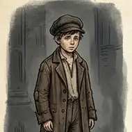
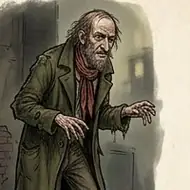
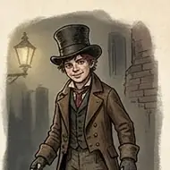
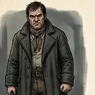
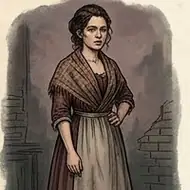
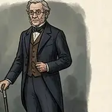
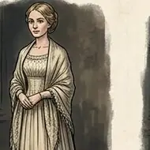
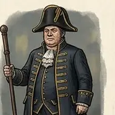

Explore / Society, Family & Human Experience
Oliver Twist
by Charles Dickens
ClassicDramaEnglish
Born in a workhouse and raised without a family, young Oliver dares to ask for more food and is sent out into a harsh world. From the streets of London to Fagin’s den of thieves, he meets both cruelty and kindness, while a hidden secret about his past waits to be uncovered.
12 chapters. Adapted edition in 12 chapters.
Table of Contents
Dramatis Personae
-

Oliver Twist The orphan born in a workhouse -

Fagin The old criminal who trains boys to steal -

The Artful Dodger Jack Dawkins, Fagin’s sharp young pickpocket -

Bill Sikes A violent housebreaker -

Nancy A young woman who risks her life to protect Oliver -

Mr. Brownlow The kind gentleman who takes Oliver in -

Rose Maylie The gentle niece of Mrs. Maylie -

Mr. Bumble The pompous parish official
Chapters here are formatted for reading convenience from the authoritative edition.